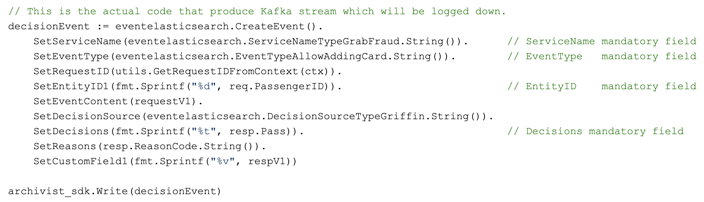

Engineering
Engineering
Building a Hyper Self-Service, Distributed Tracing and Feedback System for Rule & Machine Learning (ML) Predictions


Introduction
In Grab, the Trust, Identity, Safety, and Security (TISS) is a team of software engineers and AI developers working on fraud detection, login identity check, safety issues, etc. There are many TISS services, like grab-fraud, grab-safety, and grab-id. They make billions of business decisions daily using the Griffin rule engine, which determines if a passenger can book a trip, get a food promotion, or if a driver gets a delivery booking.
There is a natural demand to log down all these important business decisions, store them and query them interactively or in batches. Data analysts and scientists need to use the data to train their machine learning models. RiskOps and customer service teams can query the historical data and help consumers.
That’s where Archivist comes in; it is a new tracing, statistics and feedback system for rule and machine learning-based predictions. It is reliable and performant. Its innovative data schema is flexible for storing events from different business scenarios. Finally, it provides a user-friendly UI, which has access control for classified data.
Here are the impacts Archivist has already made:
- Currently, there are 2 teams with a total of 5 services and about 50 business scenarios using Archivist. The scenarios include fraud prevention (e.g. DriverBan, PassengerBan), payment checks (e.g. PayoutBlockCheck, PromoCheck), and identity check events like PinTrigger.
- It takes only a few minutes to onboard a new business scenario (event type), by using the configuration page on the user portal. Previously, it took at least 1 to 2 days.
- Each day, Archivist logs down 80 million logs to the ElasticSearch cluster, which is about 200GB of data.
- Each week, Customer Experience (CE)/Risk Ops goes to the user portal and checks Archivist logs for about 2,000 distinct customers. They can search based on numerous dimensions such as the Passenger/DriverID, phone number, request ID, booking code and payment fingerprint.
Background
Each day, TISS services make billions of business decisions (predictions), based on the Griffin rule engine and ML models.
After the predictions are made, there are still some tough questions for these services to answer.
- If Risk Ops believes a prediction is false-positive, a consumer could be banned. If this happens, how can consumers or Risk Ops report or feedback this information to the new rule and ML model training quickly?
- As CustomService/Data Scientists investigating any tickets opened due to TISS predictions/decisions, how do you know which rules and data were used? E.g. why the passenger triggered a selfie, or why a booking was blocked.
- After Data Analysts/Data Scientists (DA/DS) launch a new rule/model, how can they track the performance in fine-granularity and in real-time? E.g. week-over-week rule performance in a country or city.
- How can DA/DS access all prediction data for data analysis or model training?
- How can the system keep up with Grab’s business launch speed, with maximum self-service?
Problem
To answer the questions above, TISS services previously used company-wide Kibana to log predictions. For example, a log looks like: PassengerID:123,Scenario:PinTrigger,Decision:Trigger,.... This logging method had some obvious issues:
- Logs in plain text don’t have any structure and are not friendly to ML model training as most ML models need processed data to make accurate predictions.
- Furthermore, there is no fine-granularity access control for developers in Kibana.
- Developers, DA and DS have no access control while CEs have no access at all. So CE cannot easily see the data and DA/DS cannot easily process the data.
To address all the Kibana log issues, we developed ActionTrace, a code library with a well-structured data schema. The logs, also called documents, are stored in a dedicated ElasticSearch cluster with access control implemented. However, after using it for a while, we found that it still needed some improvements.
- Each business scenario involves different types of entities and ActionTrace is not fully self-service. This means that a lot of development work was needed to support fast-launching business scenarios. Here are some examples:
-
The main entities in the taxi business are Driver and Passenger,
-
The main entities in the food business can be Merchant, Driver and Consumer.
All these entities will need to be manually added into the ActionTrace data schema.
-
- Each business scenario may have their own custom information logged. Because there is no overlap, each of them will correspond to a new field in the data schema. For example:
- For any scenario involving payment, a valid payment method and expiration date is logged.
- For the taxi business, the geohash is logged.
-
To store the log data from ActionTrace, different teams need to set up and manage their own ElasticSearch clusters. This increases hardware and maintenance costs.
- There was a simple Web UI created for viewing logs from ActionTrace, but there was still no access control in fine granularity.
Solution
We developed Archivist, a new tracing, statistics, and feedback system for ML/rule-based prediction events. It’s centralised, performant and flexible. It answers all the issues mentioned above, and it is an improvement over all the existing solutions we have mentioned previously.
The key improvements are:
- User-defined entities and custom fields
- There are no predefined entity types. Users can define up to 5 entity types (E.g. PassengerId, DriverId, PhoneNumber, PaymentMethodId, etc.).
- Similarly, there are a limited number of custom data fields to use, in addition to the common data fields shared by all business scenarios.
- A dedicated service shared by all other services
- Each service writes its prediction events to a Kafka stream. Archivist then reads the stream and writes to the ElasticSearch cluster.
- The data writes are buffered, so it is easy to handle traffic surges in peak time.
- Different services share the same Elastic Cloud Enterprise (ECE) cluster, but they create their own daily file indices so the costs can be split fairly.
- Better support for data mining, prediction stats and feedback
- Kafka stream data are simultaneously written to AWS S3. DA/DS can use the PrestoDB SQL query engine to mine the data.
- There is an internal web portal for viewing Archivist logs. Customer service teams and Ops can use no-risk data to address CE tickets, while DA, DS and developers can view high-risk data for code/rule debugging.
- A reduction of development days to support new business launches
- Previously, it took a week to modify and deploy the ActionTrace data schema. Now, it only takes several minutes to configure event schemas in the user portal.
- Saves time in RiskOps/CE investigations
- With the new web UI which has access control in place, the different roles in the company, like Customer service and Data analysts, can access the Archivist events with different levels of permissions.
- It takes only a few clicks for them to find the relevant events that impact the drivers/passengers.
Architecture Details
Archivist’s system architecture is shown in the diagram below.

- Different services (like fraud-detection, safety-allocation, etc.) use a simple SDK to write data to a Kafka stream (the left side of the diagram).
- In the centre of Archivist is an event processor. It reads data from Kafka, and writes them to ElasticSearch (ES).
- The Kafka stream writes to the Amazon S3 data lake, so DA/DS can use the Presto SQL query engine to query them.
- The user portal (bottom right) can be used to view the Archivist log and update configurations. It also sends all the web requests to the API Handler in the centre.
The following diagram shows how internal and external users use Archivist as well as the interaction between the Griffin rule engine and Archivist.

Flexible Event Schema
In Archivist, a prediction/decision is called an event. The event schema can be divided into 3 main parts conceptually.
- Data partitioning: Fields like
service_nameandevent_typecategorise data by services and business scenarios.Field name Type Example Notes service_name string GrabFraud Name of the Service event_type string PreRide PaxBan/SafeAllocation - Business decision making:
request_id,decisions,reasons,event_contentare used to record the business decision, the reason and the context (E.g. The input features of machine learning algorithms).Field name Type Example Notes request_id string a16756e8-efe2-472b-b614-ec6ae08a5912 a 32-digit id for web requests event_content string Event context decisions [string] ["NotAllowBook", "SMS"] A list reasons string json payload string of the response from engine. - Customisation: Archivist provides user-defined entities and custom fields that we feel are sufficient and flexible for handling different business scenarios.
Field name Type Example Notes entity_type_1 string Passenger entity_id_1 string 12151 entity_type_2 string Driver entity_id_2 string 341521-rdxf36767 ... string entity_id_5 string custom_field_type_1 string “MessageToUser” custom_field_1 string "please contact Ops" User defined fields custom_field_type_2 “Prediction rule:” custom_field_2 string “ML rule: 123, version:2” ... string custom_field_6 string
A User Portal to Support Querying, Prediction Stats and Feedback
DA, DS, Ops and CE can access the internal user portal to see the prediction events, individually and on an aggregated city level.

There are graphs on the portal, showing the rule/model performance on individual customers over a period of time.

How to Use Archivist for Your Service
If you want to get onboard Archivist, the coding effort is minimal. Here is an example of a code snippet to log an event:


Lessons
During the implementation of Archivist, we learnt some things:
- A good system needs to support multi-tenants from the beginning. Originally, we thought we could use just one Kafka stream, and put all the documents from different teams into one ElasticSearch (ES) index. But after one team insisted on keeping their data separately from others, we created more Kafka streams and ES indexes. We realised that this way, it’s easier for us to manage data and share the cost fairly.
- Shortly after we launched Archivist, there was an incident where the ES data writes were choked. Because each document write is a goroutine, the number of goroutines increased to 400k and the memory usage reached 100% within minutes. We added a patch (2 lines of code) to limit the maximum number of goroutines in our system. Since then, we haven’t had any more severe incidents in Archivist.
Join Us
Grab is the leading superapp platform in Southeast Asia, providing everyday services that matter to consumers. More than just a ride-hailing and food delivery app, Grab offers a wide range of on-demand services in the region, including mobility, food, package and grocery delivery services, mobile payments, and financial services across 428 cities in eight countries.
Powered by technology and driven by heart, our mission is to drive Southeast Asia forward by creating economic empowerment for everyone. If this mission speaks to you, join our team today!